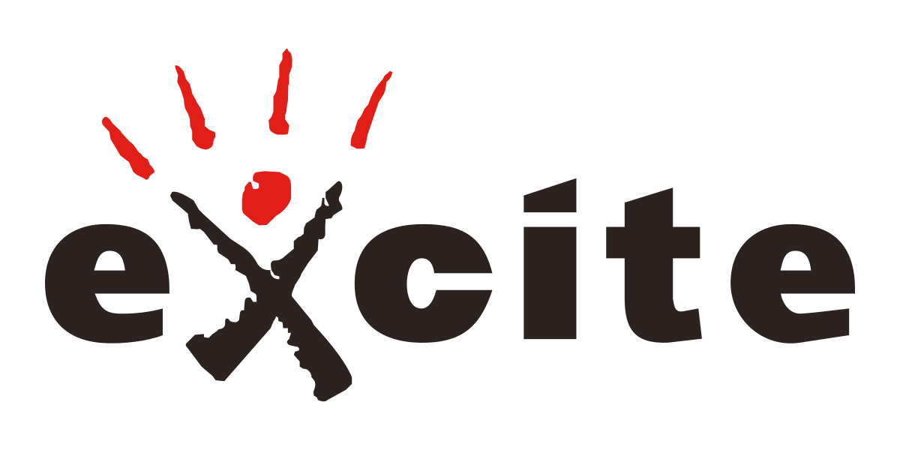

Department: Technology Development Theme: Analysis of IoT Data by Deep Learning
February 2016 - March 2017
Signpost Co., Ltd: Joint Research
Theme: A Research of deep network that efficiently learns in short time and keeps and improves product recognition accuracy against increasing number of products

September 2016
Excite Japan Co., Ltd: Intern
Department: Web System Development
Theme: Web, System Design and Development
August 2016
Beijing University of Posts and Telecommunications: Visiting Student
Main Research Interests: Deep Learning for Mobile, Generative Adversarial Networks(GANs), Food (e.g. Real-Time Image Recognition, Neural Style Transfer, Generative Model)
Sub Research Interests: Information Visualization and Data Mining, Intellectual Property, Education on Mathematics and Physics
Publications(International Conferences):
・Shu Naritomi, Ryosuke Tanno, Takumi Ege and Keiji Yanai: FoodChangeLens: CNN-based Food Transformation on HoloLens, Proc. of International Workshop on Interface and Experience Design with AI for VR/AR (DAIVAR), demo, Taichung, Taiwan (2018/12).
・Yuki Izumi, Daichi Horita, Ryosuke Tanno and Keiji Yanai: Real-Time Image Classification and Transformation Apps on iOS by “Chainer2MPSNNGraph”, Proc. of NIPS WS on Machine Learning on the Phone and other Consumer Devices (MLPCD), Motreal, Canada (2018/12).
・Ryosuke Tanno, Takumi Ege and Keiji Yanai: AR DeepCalorieCam V2: Food Calorie Estimation with CNN and AR-based Actual Size Estimation, ACM Symposium on Virtual Reality Software and Technology (VRST), demo, Tokyo, Japan (2018/11).
・Ryosuke Tanno, Daichi Horita, Wataru Shimoda and Keiji Yanai: Magical Rice Bowl: Real-time Food Category Changer, Proc. of ACM Multimedia (ACM MM), demo, Seoul, Korea (2018/10).
・Daichi Horita, Ryosuke Tanno, Wataru Shimoda and Keiji Yanai: Food Category Transfer with Conditional Cycle GAN and a Large-scale Food Image Dataset, Proc. of International Workshop on Multimedia Assisted Dietary Management (MADiMa), oral, Stockholm, Sweden (2018/07).
・Ryosuke Tanno and Keiji Yanai: AR DeepCalorieCam: An iOS App for Food Calorie Estimation with Augmented Reality, Proc. of the International Multimedia Modeling Conference (MMM), poster, Bangkok, Thailand (2018/02).
・Ryosuke Tanno, Takumi Ege and Keiji yanai: DeepCalorieCam:
An iOS App for Dish Detection and Calorie Estimation, Proc. of ICIAP International Workshops on Multimedia Assisted Dietary Management (MADiMa), demo, Catania, Italy (2017/09).
・Keiji Yanai and Ryosuke Tanno: Conditional Fast Style Transfer Network, Proc. of ACM International Conference on Multimedia Retrieval (ICMR), poster, Bucharest, Romania (2017/06).
・Ryosuke Tanno and Keiji Yanai: DeepStyleCam:DeepStyleCam: A Real-time Style Transfer App on iOS, Proc. of International Conference on Multimedia Modelling (MMM), demo, Reykjavik, Iceland (2017/01). (Best Demo Award)
・Ryosuke Tanno and Keiji Yanai: Caffe2C: A Framework for Easy Implementation of CNN-based Mobile Applications, International Workshop On Mobile Ubiquitous Systems, Infras- tructures, Communications, And AppLications (MUSICAL 2016), oral, Hiroshima, Japan (2016/11).
・Ryosuke Tanno, Wataru Shimoda and Keiji Yanai: DeepXCam: Very Fast CNN-based Mobile Applications: Multiple Style Transfer and Object Recognition, Proc. of the European Conference on Computer Vision (ECCV), demo, Amsterdam, Netherlands (2016/10).
・Ryosuke Tanno, Koichi Okamoto and Keiji Yanai: DeepFoodCam: A DCNN-based Real-time Mobile Food Recognition System, Proc. of ACM MM Workshop on Multimedia Assisted Dietary Management (MADiMa), demo, Amsterdam, Netherlands (2016/10).
・Keiji Yanai, Ryosuke Tanno and Koichi Okamoto: Efficient Mobile Implementation of A CNN-based Object Recognition System, Proc. of ACM Multimedia (ACM MM), poster, Amsterdam, Netherlands (2016/10).
Art Works:
・Ryosuke Tanno: Food Image Transformation, Proc. of ECCV Workshop on Computer Vision for Fashion, Art and Design, art works, Munich, Germany (2018/9). (longlist)
Please visit Computer Vision Art Gallery Site → here !!.
My first visual art with computer vision techniques is here !!.
・Ryosuke Tanno: Japanese Anime Food Image Transformation, Proc. of NeurIPS Workshop on Machine Learning for Creativity and Design, art works, Motreal, Canada (2018/12).
Please visit AI Art Gallery → here !!.
Developed Applications (All applications related to deep learning):
・DeepFoodCam(MADiMa2016) : Project HP
・DeepStyleCam β ver(MIRU2016)
・DeepStyleCam(MMM2017): Project HP
・DeepStyleCam V2(MIRU2017): Project HP
・DeepMaterialCam(MIRU2017)
・SceneTexEraser(MIRU2017)
・DeepCalorieCam V1 AR ver(MADiMa2017)
・DeepCalorieCam(MMM2018): Project HP
・Magical Rice Bowl(ACM MM2018): Project HP
・FoodChangeLens(AIVR WS2018): Project HP
・DeepCalorieCam V2(VRST2018)
FoodChangeLens (AIVR WS2018)
Demo Movie Version 1. It was created by Shu Naritomi and Takumi Ege.
FoodChangeLens (AIVR WS2018)
Demo Movie Version 2. It was created by Shu Naritomi and Takumi Ege.